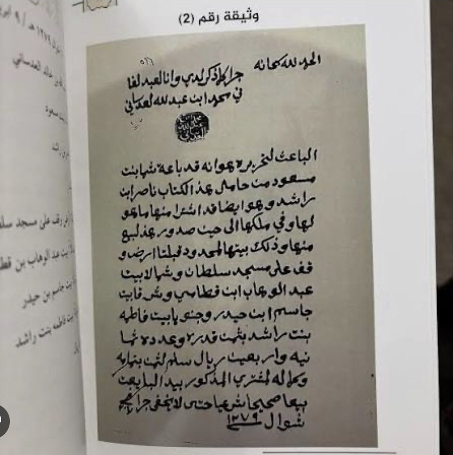

20 Shawwal 1279 (10 April 1863) · Sale deed sealed by the Adsani judge
Sale deed of Shama bint Masoud's house: the house of Abdulwahab ibn Qatami on its north side
What it is
Shama bint Masoud sells her house to Naser ibn Rashid. The deed sets out its four sides: on the west, land endowed to Masjid Sultan; on the north, the house of Abdulwahab ibn Qatami; on the east, the house of Jassim ibn Haidar; and on the south, the house of Fatima bint Rashid.
Why it matters
This is the oldest deed we have found that names the family. It puts the house of Abdulwahab ibn Qatami in Fereej Ibn Rumi in 1863, right next to the land of Masjid Sultan, the mosque later known as Masjid Al-Qatami.
Who is meant
The deed says only Abdulwahab ibn Qatami. In 1863 the head of our family in Fereej Ibn Rumi was Abdulwahab bin Abdulaziz, who died in 1871, and Ma'alim part 7 places the Al-Qatami houses on these same plots beside Masjid Sultan. The other Qatami family lived in Qibla, not here.
Page copies


Original text
English translation
Notes
The deed is handwritten and sealed by the judge. The price and the judge's first name are hard to read on the copy we have, so please check them against the original. Ma'alim part 7 (book page 79, plot 43) cites this same deed of 20 Shawwal 1279 for the land endowed to Masjid Sultan, which the book also calls Masjid Al-Qatami.
Others named
Sources
Adsani deed, shared on Instagram from a published collection; confirmed by Ma'alim Madinat Al-Kuwait Al-Qadima, part 7. Copies are saved in the family Drive.
Archive reference
- Ma'alim part 7, p. 79, plot 43 · الوثيقة المؤرخة ٢٠ شوال ١٢٧٩هـ
How this text was made: Typed by Claude from the deed image; the price and the judge's name need checking. English translation by Claude; please review.
Open in the interactive site